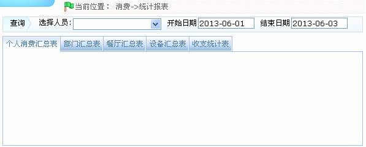
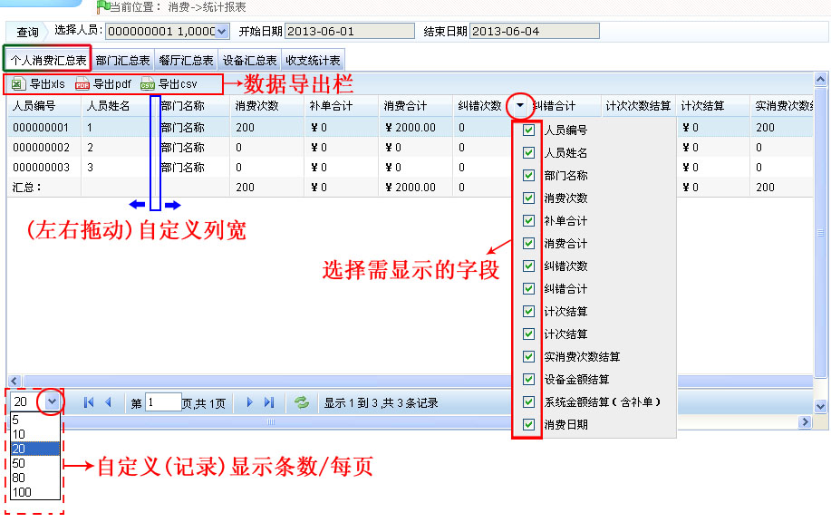
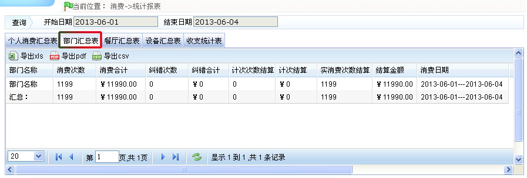
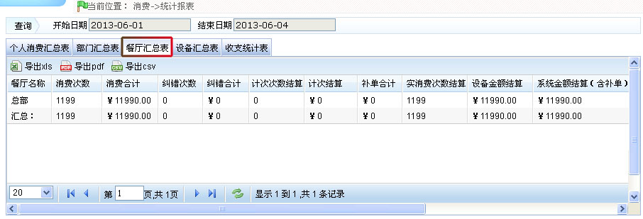
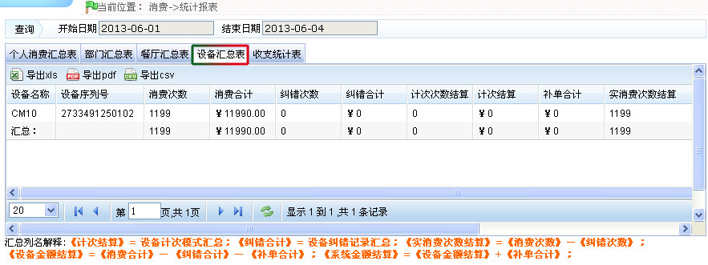
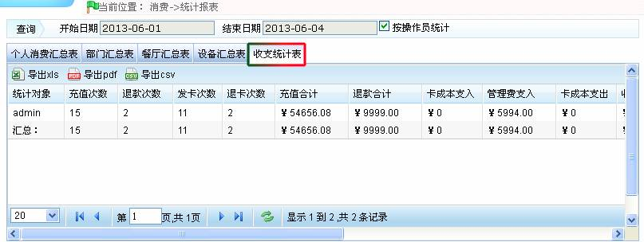

ID--8.8 统计报表
单击【消费】 【统计报表】，进入统计报表页面：
【统计报表】，进入统计报表页面：

用户可在此页面查看所有的统计报表信息，包括：个人消费汇总表、部门汇总表、餐厅汇总表、设备汇总表和收支统计表。单击页面下方的选项卡名称可以列表的方式查看其对应的统计报表信息，每个列表下方都有一个总计行，用于显示除日期列以外的其他列的每一列的总和。
1、单击选择人员后的 按钮，在弹出人员选择框中选择人员。人员的选择方法请参见附录1 常用操作中的1选择人员。
按钮，在弹出人员选择框中选择人员。人员的选择方法请参见附录1 常用操作中的1选择人员。
2、设置开始日期和结束日期，日期的设置方法，请参见附录1 常用操作中的2. 选择日期。
3、单击“个人消费汇总表”（文字），查看个人消费汇总表，如下图所示：

（1）、用户可根据需要导出统计报表，可导出为“xls”、“pdf”或“csv”格式的文件。导出报表的具体方法，请参见附录1 常用操作中的5. 导出。
（2）、用户根据需要选择统计报表需显示的字段（打勾选中后，即显示）。
（3）、用户可根据需要（左右拖动）自定义列宽。
（4）、用户可根据需要自定义统计报表每页的记录显示条数。
 备注：单击每个选项卡名称（统计报表名称），将自动更新每个报表信息，并按设置的查询条件显示被选中人员的对应统计报表信息。
备注：单击每个选项卡名称（统计报表名称），将自动更新每个报表信息，并按设置的查询条件显示被选中人员的对应统计报表信息。
-
 部门汇总表
部门汇总表
汇总每个部门的消费信息，并以报表方式显示。

-
餐厅汇总表
汇总各餐厅的消费信息，并以报表方式显示。

-
设备汇总表
汇总每个设备上的消费信息，并以报表方式显示。

-
收支统计表

-
消费合计：明细记录中所有消费记录的合计总额：包括纠错合计和结算金额（含补单）。
-
消费次数：明细记录中所有记录的总次数：包括纠错次数和结算次数。
-
结算次数：结算次数= 消费次数- 纠错次数。
-
结算金额：结算金额= 消费合计-纠错合计- 手工补单。
 备注：这里的结算总额，跟设备上的统计总额是一样的。
备注：这里的结算总额，跟设备上的统计总额是一样的。
-
系统金额结算（含补单）：结算金额（含补单）= 消费合计- 纠错合计= 结算金额+ 手工补单。
 备注：统计报表的导出请参看附录1 常用操作中的5. 导出。
备注：统计报表的导出请参看附录1 常用操作中的5. 导出。